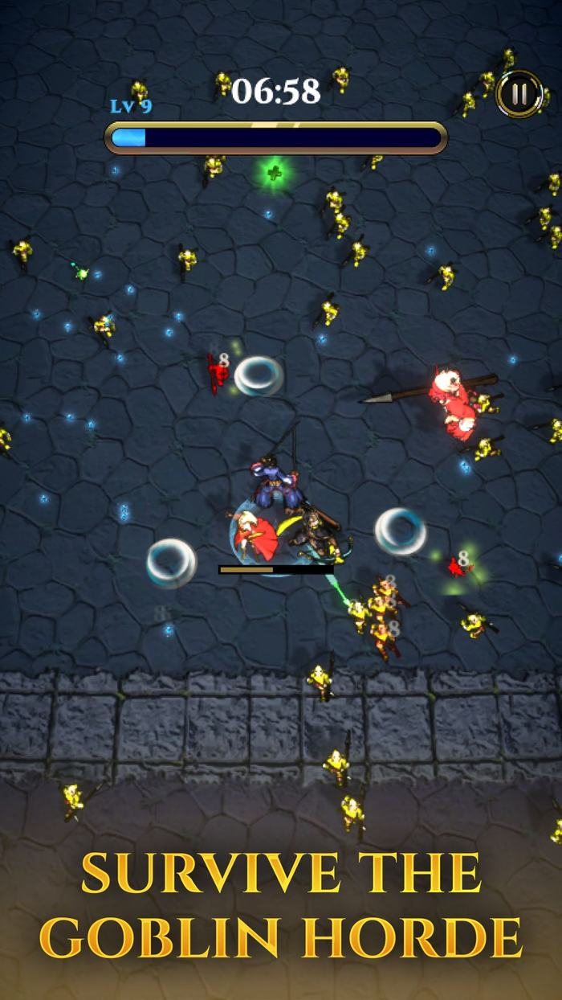
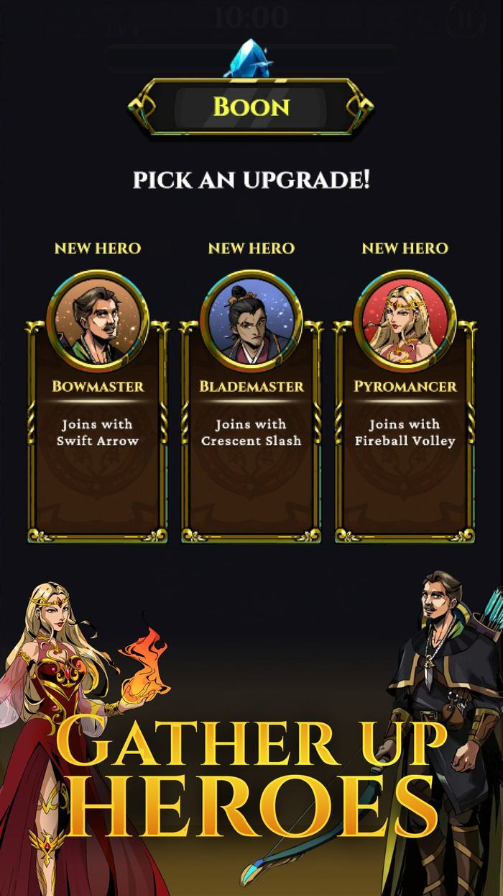
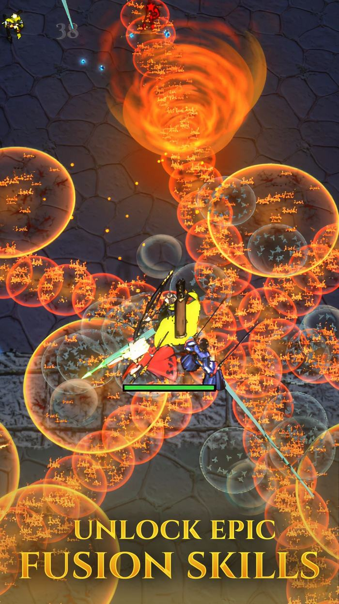
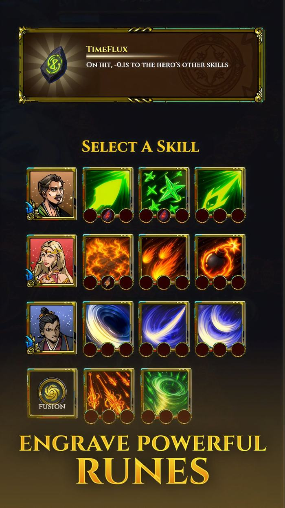
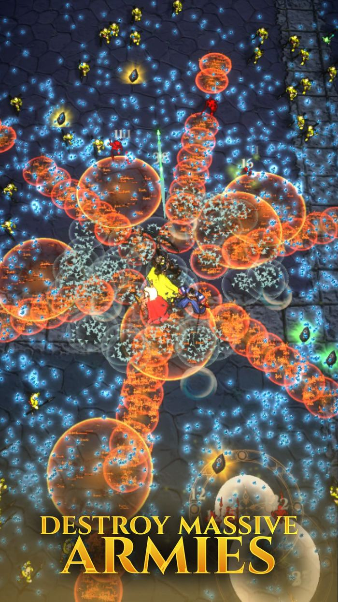
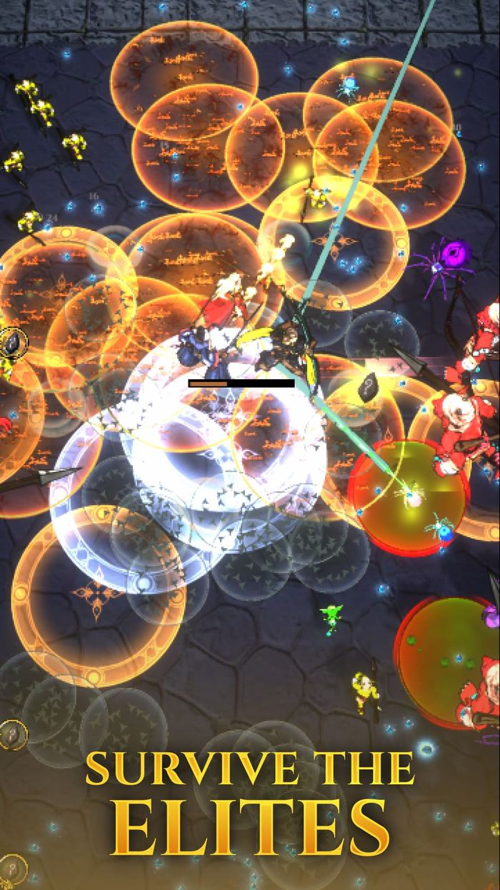

The brief
The horde survivor genre had settled into a formula: one character, auto-attack, pick an upgrade every level. We wanted to keep the dopamine of that loop but give the player something to actually do with their hands, and something to think about between runs.
Three design pillars came out of that, and each one is an engineering problem:
- A three-hero squad under simultaneous control, not a single avatar.
- Runes that socket mid-run, dropping from combat and slotting into any hero immediately.
- Fusion combos that combine two heroes' abilities into a third, larger effect.
Each pillar multiplies state. Three heroes means three times the projectiles and VFX. Runes mean stat blocks are no longer static. Fusion means abilities have to know about each other. And the target device was the low end of Android, because that's where the audience is.
The real constraint
The obvious framing is "make the game run fast." The more useful framing turned out to be: the frame budget is a fixed pot, and every design pillar wants to spend from it. So instead of optimising reactively, I started by assigning each subsystem a millisecond allowance and treating an overrun as a build failure rather than a polish task.
PrincipleA performance budget that isn't enforced automatically is a wish. The point isn't the number — it's that overrunning it becomes visible on the day it happens, not during the pre-launch panic.
Composing runes at runtime
Runes drop during combat and socket into a hero immediately, so a hero's effective stats change many times per run. The naive version — recalculate a stat block whenever anything asks for a value — allocates and thrashes. The version that works treats stats as a layered composition that is only rebuilt when its inputs actually change.
Rune definitions live in ScriptableObject assets, so design can author
and rebalance them without touching code and without a rebuild. Each rune
contributes modifiers to a named stat; the hero holds a dirty flag and recomposes
its cached block only when a socket changes.
Shape of the system
// Runes are authored as assets, not code.
[CreateAssetMenu(menuName = "Ether/Rune")]
public sealed class RuneDefinition : ScriptableObject
{
public StatModifier[] Modifiers; // additive + multiplicative, per stat
public AbilityTag[] GrantedTags; // what fusion rules can key off
}
// Hero stats are a cached composition, rebuilt only on change.
public sealed class StatBlock
{
private readonly float[] _cached = new float[StatIds.Count];
private bool _dirty = true;
public void Socket(RuneDefinition rune) { /* ... */ _dirty = true; }
public float Get(StatId id)
{
if (_dirty) Recompose(); // no per-query allocation
return _cached[(int)id];
}
}
Two properties mattered more than elegance here. Stat reads happen thousands of
times a frame, so Get had to be allocation-free and cheap. And because
fusion rules key off tags rather than concrete rune types, design could add a rune
that participates in existing combos without anyone writing a new branch.
Making the horde cheap
Hundreds of enemies, their projectiles, their death VFX and their damage numbers all want to exist at once. Three things did most of the work:
- Everything is pooled. Enemies, projectiles, hit effects and floating text come from pre-warmed pools sized to the worst case for the wave, so a difficulty spike never triggers a burst of instantiation and a GC spike mid-fight.
- Rendering is batched by design, not by luck. Enemy variants share atlases and material setups so the whole horde collapses into a small number of draw calls. Art constraints were agreed with the studios up front — cheaper than fixing it in code later.
- Not everything updates every frame. Distant and off-screen behaviour runs on a slower tick, and expensive decisions are spread across frames rather than all recomputed on the same one.
Three heroes, one input
Controlling three characters with one thumb is a design problem before it's a technical one. The resolution was to make the player responsible for positioning and timing and let the heroes handle target selection: the squad moves as a formation, and abilities fire on their own logic. That keeps the input surface small enough for a phone while leaving genuine decisions — where to stand, when to trigger a fusion, which hero to feed a rune to.
Fusion is a rules layer on top of the ability system rather than special-cased code. Each ability publishes tags; a fusion rule declares the tag pair it consumes and the composite effect it produces. Adding a combo is authoring an asset, not editing a switch statement — which is what made it survive weeks of balance iteration without rotting.
What I measured
Performance work is worthless without instrumentation, and so is game design. Both got telemetry:
- Frame time by subsystem, captured on real devices rather than in-editor.
- Run length and death causes, to find where the difficulty curve actually broke.
- Rune pick rates, which surfaced the dead options design suspected but couldn't prove.
- Crash and ANR rates segmented by device tier, so low-end regressions were visible immediately.
Trade-offs & regrets
Things I'd argue for differently on the next one:
- The stat composition layer earned its complexity; the fusion tag system nearly didn't. Tags are the right model, but I built more generality than the shipped combo count justified. Two concrete combos and a hard-coded rule would have shipped sooner and taught us the same thing.
- Pool sizing was hand-tuned per wave. It works, but it's a maintenance cost every time design touches a wave. Deriving pool sizes from the wave definition itself was the right call and I deferred it.
- I profiled on device late. The editor profiler is not the target hardware and never was. Cheap lesson to learn early, expensive to learn in week ten.
Gallery





